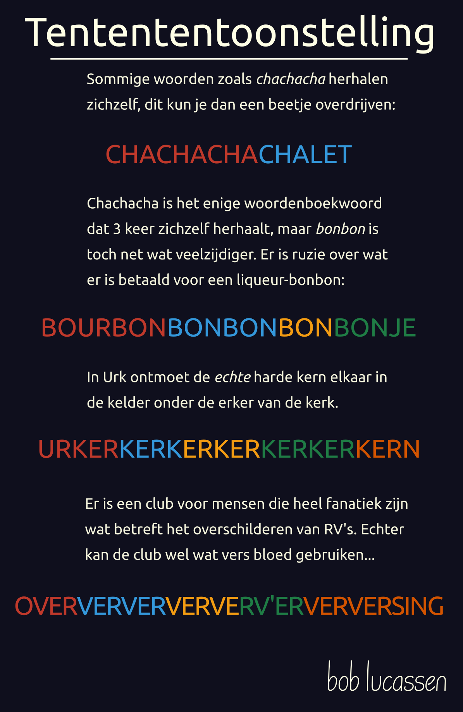

2021-02-19 · r/thenetherlands
Agentententententoonstellingen bevat 4 keer 'TEN' achter elkaar, maar dat kan natuurlijk beter!

Tentententoonstelling
Sommige woorden, zoals chacacha, herhalen zichzelf. Dit kun je dan een beetje overdrijven:
CHACHACHACHALET
Chachacha is het enige woordenboekwoord dat zichzelf driemaal herhaalt, maar bonbon is een toch net wat veelzijdiger. Er is ruzie over wat er betaald is voor een liquerbonbon
BOURBONBONBONBONBONJE
In Urk ontmoet de echte harde kern elkaar in de kelder onder de erker van de kerk.
URKERKERKERKERKERKERKERN
Er is een club voor mensen die heel fanatiek zijn wat betreft het oververven van RV's. Echter kan de club wel wat vers bloed gebruiken...
OVERVERVERVERVERV'ERVERVERSING
Uit de thread (eigen comments)
Interessant! Ik beloof plechtig dat ik zo uit de losse pols onnodig pretentieus schrijf, geen toch-vervangingen vereist!
Een snelle en imperfecte meting op het Fok! forum (redelijk jonge mensen) laat zien dat er 35139 instanties zijn van "Echter, " (met komma dus) en 81140 instanties van "Echter ", aan het begin van zinnen. De totale hoeveelheid instanties van het lemma echter in wat voor context dan ook is overigens 609424. Dus dit hele verhaal is slechts een grove indicatie rondom echter gebruik.
Je hebt helemaal gelijk, zie bijvoorbeeld https://onzetaal.nl/taaladvies/echter-maar/! Maar vervang echter nu eens met toch, wat ook een bijwoord is met een heel vergelijkbare betekenis in deze context. Geen probleem? Volgens mij is deze ontwikkeling redelijk wijdverspreid, zie het als een extra betekenis die echter kan hebben. Voor mij is het in ieder geval heel natuurlijk en duidelijk.
Ja! Iets strikter, en geen hergebruik van betekenis. Anders had ik wel een bonbon van een bonbon-bon gemaakt en dan houdt het niet meer op...
Zie het als fitness, je hebt wel voldoende reps nodig om je tong een beetje sterk te trainen.
Je kunt in zinnetjes soms ook nog heel creatieve combinaties maken, zoals met TOM:
We vragen... t' OMT om Tom TomTom te leren gebruiken.
En ik daag jullie uit om met VER nog een stapje verder te gaan in een zinsconstructie. (je hebt dan ook ver en er tot je beschikking).
petje.af/onnodigcomplex
Super leuk! Vond Urk leuk omdat het zo in het nieuws was (en kei veel kerken heeft), maar langer is altijd belangrijker!
(6 korte reactie(s) weggelaten)
Bron
https://www.reddit.com/r/thenetherlands/comments/lnc8qb/agentententententoonstellingen_bevat_4_keer_ten/